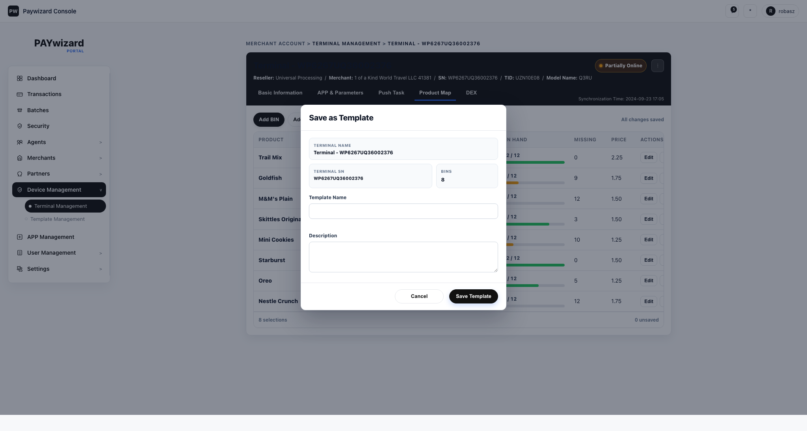
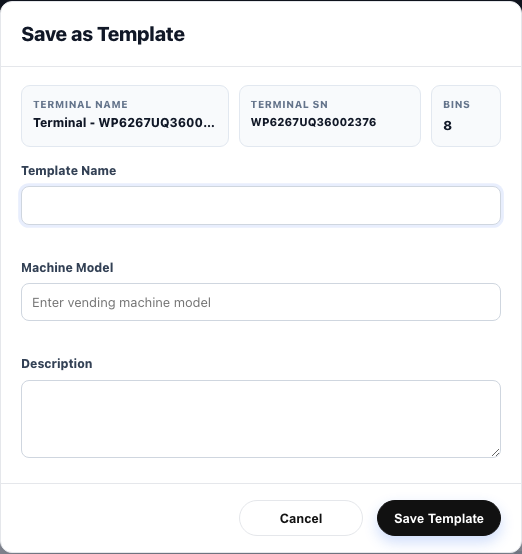
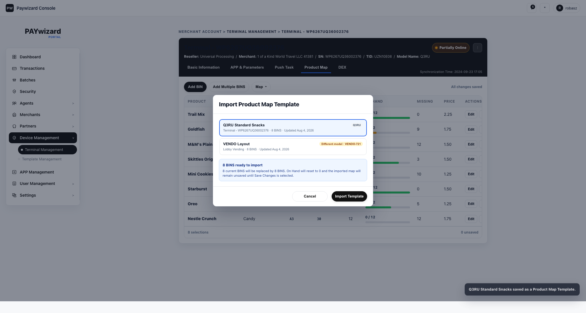
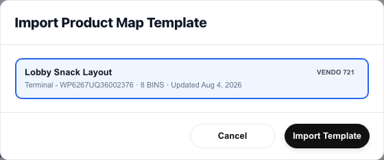
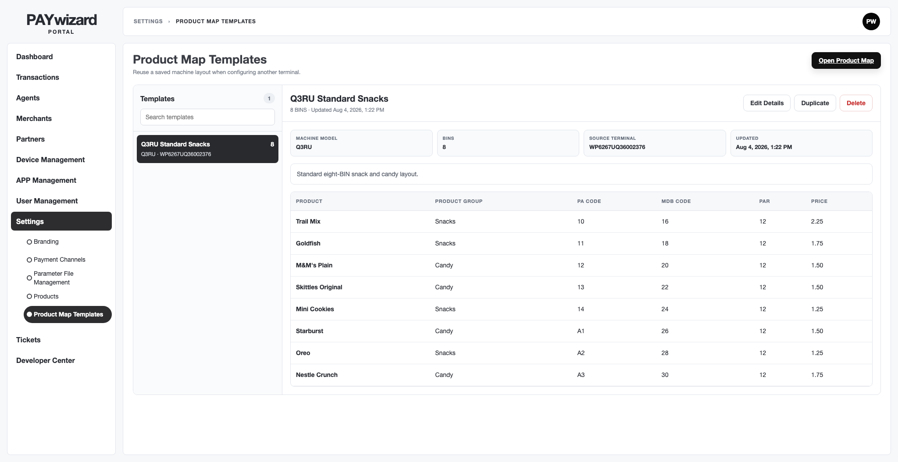
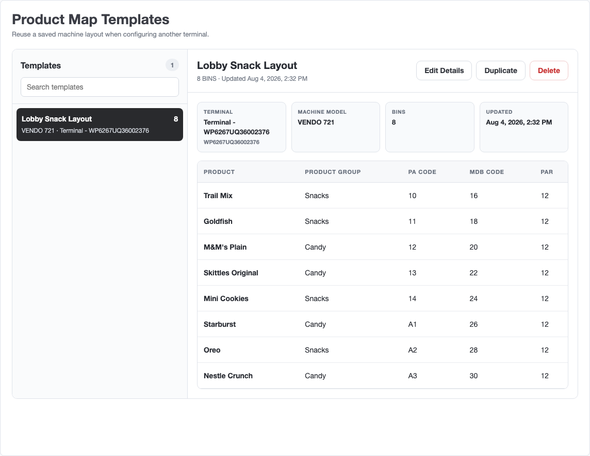

Before — Save summary wrapped to two rows

After — Three terminal facts aligned in one row

Before — Import included explanation and payment-terminal model matching

After — Direct template selection with vending-machine model

Template manager — metadata hierarchy


The action link is removed; Terminal Name and SN share one card so the requested metadata remains a four-card row.